Portable 3D Model Viewer

Update the specimen list, then download complete specimens for offline use.
Catalog updates only refresh the list. Downloads are started per specimen.
Apply a catalog synchronization to select specimens.
Downloaded specimens stay available without a network connection.